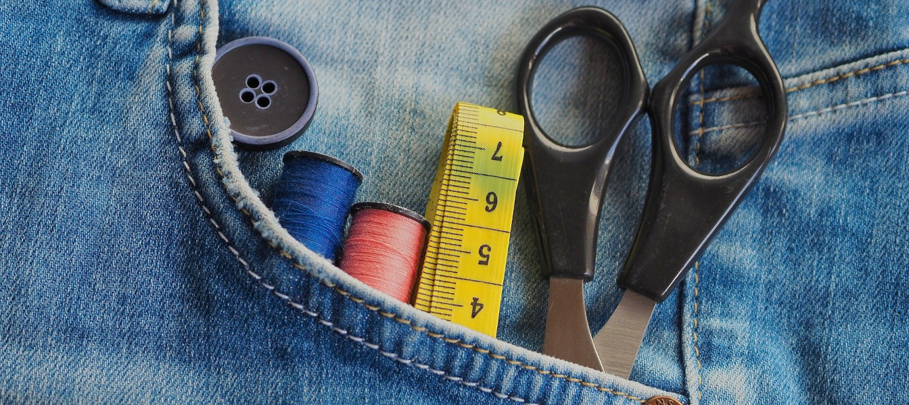

Jak dbać o odzież roboczą/ochronną?
Zakup ubrań wysokiej jakości, wykonanych z dobrej jakości materiału jednak pierwszym krokiem w celu zachowania jej jak najdłuższej trwałości. Równie ważne jednak jest jej prawidłowe użytkowanie oraz przechowywanie.
Przechowywanie odzieży roboczej
Odzież powinno się przechowywać w przeznaczonych do tego celu metalowych szafkach pracowniczych, aby odseparować ją od wszelkich potencjalnych zagrożeń, takich jak zanieczyszczenia, chemikalia, szkodliwe i zakaźne substancje, a także od wysokiego natężenia światła, wysokiej temperatury czy wilgotności. Szafki takie powinny mieścić się w suchym, oddzielnym pomieszczeniu. Ubrania nie powinny być przechowywane na słońcu, ponieważ mogą stracić swój kolor, ani w wilgotnym pomieszczeniu, ponieważ może to spowodować utratę jej właściwości.
Przygotowanie odzieży do prania
Przed włożeniem odzieży do pralki należy opróżnić kieszenie, a także zapiąć wszystkie zamki oraz paski. Metalowe elementy mogłyby uszkodzić odzież w trakcie prania. Następnie należy wywinąć odzież na lewą stronę. Pojedyncze plamy i luźne zabrudzenia najlepiej jest usunąć jeszcze przed upraniem odzieży za pomocą wilgotnej szmatki.
Pranie odzieży
Odzież należy prać zgodnie z zaleceniami na metce. Temperaturę prania należy dostosować do rodzaju materiału, jednakże większośc ubrań dobrze dopiera się w temperaturze 40st (chyba, że wytyczne producenta na metce zalecają inaczej).
Bawełna może wytrzymać temperatury w zależności od typu materiału - 40˚C, 60˚C lub nawet 90˚C, włókna syntetyczne (np. wiskoza), temperatury chłodne lub letnie - około 30˚C, a sztuczne włókna, takie jak poliester lub poliamid można prać w cieplejszej wodzie (40-60˚C).
Odzież należy prac bez dodatku środków zmiękczających, ponieważ mogą one spowodować utracenie właściwości ubrania.
Ubrania z nadrukiem można prac maksymalnie w temperaturze 40-50˚C. Wyższa temperatura może spowodować odksztalcanje się nadruku.